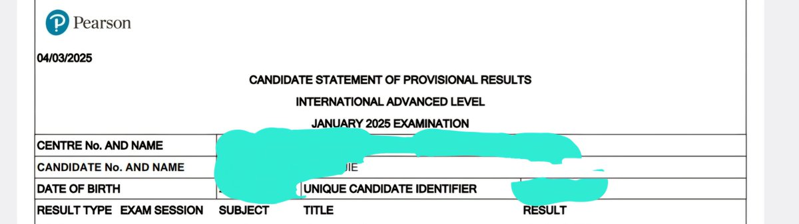

RedFox（2代目）🇲🇴🇭🇰
@FoxRed695449
說起這個我真的得表揚下alevel，它不寫性別

garrulous abyss🌈
@garrulous_abyss
看到王安黛的推特，她在大学毕业后手术改证。
而因为国内的毕业证与身份证号绑定，所以她拿到新身份证（性别、身份证号都会变）后，原学历变相作废。所以她既难以找工作，也难以考研。
理论上，存在“毕业后手术，学历也能更改”的可能。但现实里，几乎总是高校和教育部相互踢皮球，实际上几乎不能改。